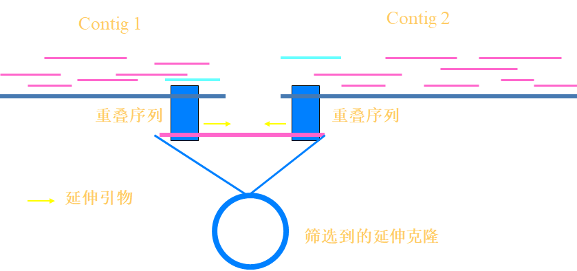
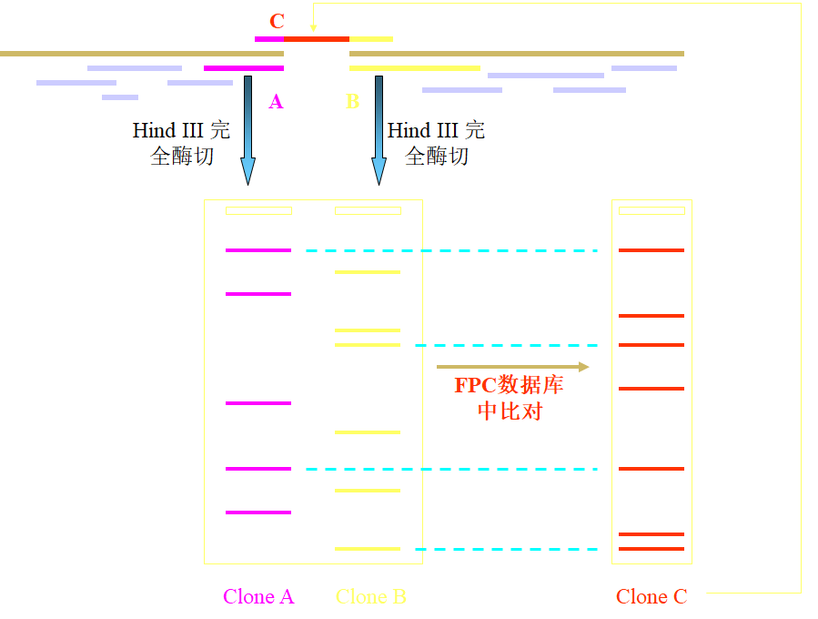
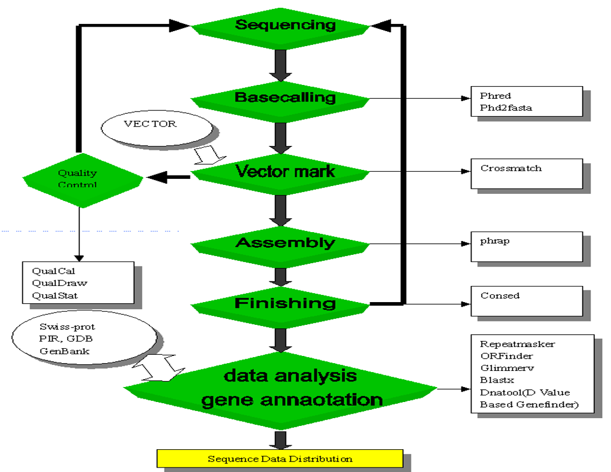

逐步克隆法过程
- 构建遗传图谱
- 将种子BACs文库和标记锚定
- 识别扩展BACs
- 重复延伸覆盖全长
确定BACs和标记的对应关系
BAC Pooling Protocal
- 将每八组的BAC混合到一个板中，组成superpool，用PCR鉴定标记，确定在哪一个superpool（人类共48*8）；
- 将每一个superpool的每一行混合在一起，组成row pools，PCR鉴定确定在哪一行；同理，每一列混合在一起组成column pools，确定在那一列；每一板混合在一起，确定在哪一板。最终确定哪一个BAC与标记对应。
结果不一定只有一个阳性，需要判断阳性是否为真阳性
- 根据条带大小判断；
- 不能有多带发生（非特异性扩增）；
- 亮度最高的几个条带。
最后一轮：菌液PCR
实验技巧
取菌的时候，从冰箱里拿出来之后，用牙签伸入冰中，沾一下即可。
延伸克隆的筛选
STS的密度尚未达到绘制高精度物理图谱的要求，且在基因组中的分布不均匀，造成很多区域没有阳性克隆覆盖，形成空洞。因此需用指纹图谱（FPC法）或末端序列（Walking by End Sequence）步移等手段对种子克隆进行延伸，形成连续克隆群。利用延伸方法筛选得到的克隆称为延伸克隆。

指纹图谱法
- BAC clones 在96深孔板中培养
- Hind III 完全酶切
- 1% 琼脂糖凝胶电泳
挑取靠近空洞的种子克隆，酶切构建其指纹图谱，在FPC数据库中进行比对，搜索含有此克隆的重叠克隆群信息，从中确定覆盖空洞区域的克隆，达到延伸目的。

末端序列步行法
挑取靠近空洞的种子克隆进行末端测序，然后在基因组数据库中进行比对，确定专一性的序列片段作为新的STS路标。最后设计新路标的PCR引物，按照STS—PCR“反应池”方案筛选新的克隆，达到延伸的目的 。
Clone Identification
- STS-PCR
- BAC end sequencing
- Fingerprinting
- FISH
“工作框架图”绘制
根据序列与STS database进行blastn比较结果，将克隆定位末端序的比较，判定延伸在contig外的一端序列。并可及时进行walking，筛选新的克隆
霰弹法测序组装与Finishing
BAC文库组装流程

霰弹法流程
- Bac Clone: 100-200 kb物理打断→Sheared DNA: 1.0-2.0 kb
- Sequencing Templates
- 随机读取
- 装配
- 用PCR或其他方法补充空缺处